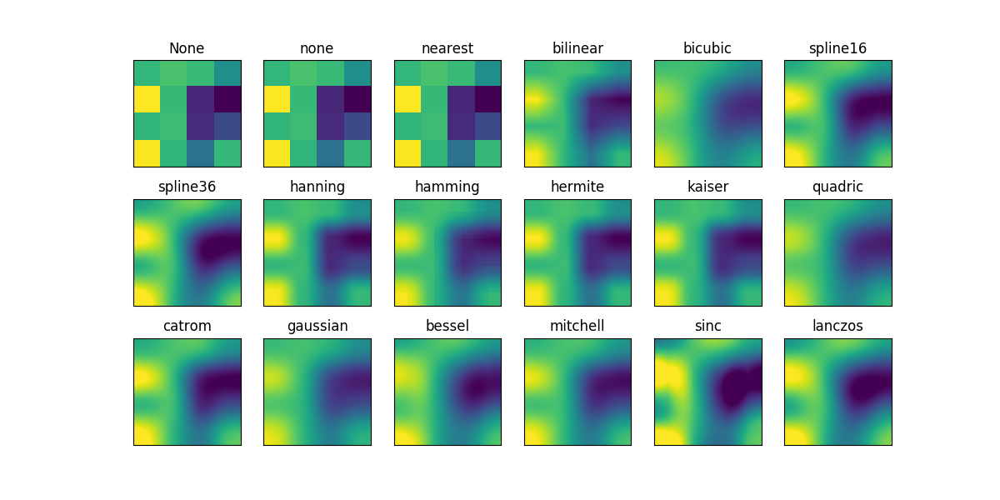

Version 2.1.2
This example displays the difference between interpolation methods for imshow and matshow.
If interpolation is None, it defaults to the rc image.interpolation
parameter. If the interpolation is none, then no interpolation is performed
for the Agg, ps and pdf backends. Other backends will default to ‘nearest’.
For the Agg, ps and pdf backends, interpolation = ‘none’ works well when a big image is scaled down, while interpolation = ‘nearest’ works well when a small image is scaled up.
import matplotlib.pyplot as plt
import numpy as np
methods = [None, 'none', 'nearest', 'bilinear', 'bicubic', 'spline16',
'spline36', 'hanning', 'hamming', 'hermite', 'kaiser', 'quadric',
'catrom', 'gaussian', 'bessel', 'mitchell', 'sinc', 'lanczos']
# Fixing random state for reproducibility
np.random.seed(19680801)
grid = np.random.rand(4, 4)
fig, axes = plt.subplots(3, 6, figsize=(12, 6),
subplot_kw={'xticks': [], 'yticks': []})
fig.subplots_adjust(hspace=0.3, wspace=0.05)
for ax, interp_method in zip(axes.flat, methods):
ax.imshow(grid, interpolation=interp_method, cmap='viridis')
ax.set_title(interp_method)
plt.show()
Total running time of the script: ( 0 minutes 0.461 seconds)